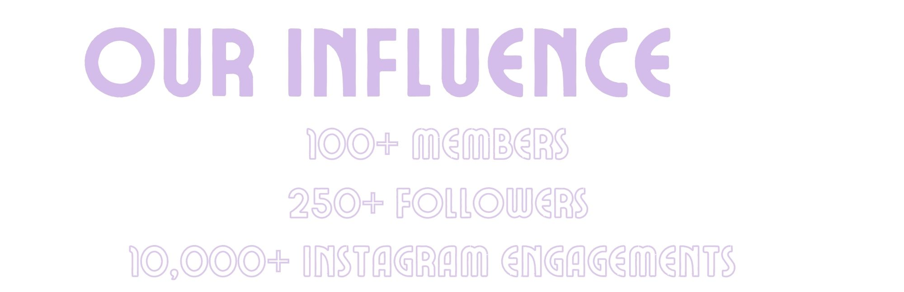

Data Visualization: Using data to explore the atmosphere of a distant exoplanet.
What is an exoplanet?
An exoplanet simply refers to a planet that exists outside of our solar system. Our knowledge of the observable universe was radically transformed by the discovery of the first exoplanetary systems less than thirty years ago. We currently know of over 5,000 confirmed exoplanets which gives us great insight into the habitability of the universe and the possibility of extraterrestrial life.
How it began:
Exoplanets are generally difficult to detect. However, the technique of transmission spectroscopy has made it significantly easier. Transmission spectroscopy is a fancy term for when a planet transits in front of its host star. We can record these dips in light as a function of wavelength. After data reduction, these transmission spectra can reveal an exoplanet’s chemical composition by comparing in and out of transit spectra. This project was completed with the SURF program at Caltech where I was a summer intern. I worked with the Caltech Division of Planetary Sciences under Heather Knutson and Jessica Spake. Heather Knutson's research group had previously observed and recorded the transit of WASP-44b at the Mauna Kea observatory in Hawaii.
Defining Goals:
The goal of our project was to observe the atmosphere of WASP-44b, which had previously never been done. Scientists have methodically observed the atmospheres of other transiting exoplanets, but WASP-44b remained a complete mystery. We were specifically looking for metastable Helium on the 10830 Angstroms line. A detection of Helium can allude to an escaping atmosphere while a non-detection can suggest an atmosphere rich in heavier elements like Carbon. Either way, my overarching goal was to learn more about this distant exoplanet and its atmosphere.
Aligning my role with the goals and objectives of Caltech, I was responsible for all reduction and processing of the WASP-44b data. Our general method was to use open-source languages to analyze and visualize the extracted datasets containing 32 raw spectra from WASP-44b.
Quantitative Data Reduction:
The process of converting and reducing raw data took up most of the project time. We corrected and processed the raw science images in various python routines before running the reduced dataset through a pre-existing NIRSPEC Data Reduction pipeline. The pipeline generated ASCII tables and preview plots. Our reduced data produced a strong helium line, meaning WASP-44b’s host star emits a significant amount of high energy radiation. Finally, after comparing the in-transit and out of transit reduced data, we found there was no significant increase in the 10830 Angstroms line. This essentially means we have a non-detection in the atmosphere of WASP-44b, alluding to an atmosphere rich in heavy elements.
Reflection:
One of the most fundamental elements of science is the ability to share your knowledge with others. A challenge I encountered in this project was attempting to explain the highly scientific methods used in my project to people outside of the scientific realm, or even those within the realm who had little to no knowledge of exoplanet science. After presenting my preliminary results to my friends and family, I learned that knowledge is best conveyed in a concise manner. It is important to be specific with your words and avoid ambiguity. As someone whose strong suit growing up was never science, I can really empathize with people who feel overwhelmed at the influx of scientific jargon. I like to tell people to ‘explain it to me like a 5 year old’ and that there are no stupid questions! Good communication is paramount in success of any project and the transformation of ideas into actions that benefit the lives of others.
You can watch my UCLA presentation here!
GRACE: Developing and curating impactful content.
I am the president and co-founder of the Genocide Relief, Awareness, and Community Education. We are a youth-led, UCLA student organization focused on genocide prevention.

As a descendant of a survivor of genocide, I have always been passionate about seeking justice for wrongful acts. In 2020, I co-founded the GRACE at UCLA to cultivate a student-led community of passionate individuals dedicated to amplifying and empowering survivors of genocide. Our organization has led several fundraising campaigns for survivors of various genocides.
If COVID-19 taught us anything, it was the power of the internet. GRACE utilizes our online platform full of art, literature, and research to accurately relay information and awareness surrounding genocide. We believe it is important to diversify the experience of survivors through visual and auditory content. Our personal relations and research committees are dedicated to engaging our audience on worldwide issues with webinars, panels, speaking events, and most importantly social media design and campaigns. You can view our Instagram platform here.
Watch one of our speaker events here!